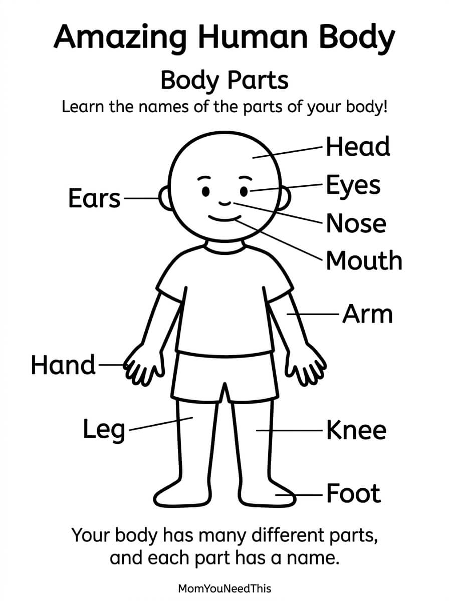

Human Body Parts Free Printable Body Parts Poster For Kids
Help toddlers and preschoolers learn the names of common body parts with this simple, kid-friendly printable. Download the free image and use it at home, during preschool activities, or as part of a body-themed learning lesson.
🧒 Learn, Point & Practice
Use the printable to help your child recognize and name different parts of the human body while turning everyday learning into a fun activity.
Free Human Body Parts Printable


How To Use This Printable
Point to different parts of the body and ask your child to name them. You can also take turns pointing to a body part and having your child find it on the printable. Print a copy to keep in a learning area, playroom, or preschool activity binder.
Why Learn Body Parts?
Learning body-part names helps young children build vocabulary, understand their bodies, follow simple instructions, and communicate more clearly about themselves.
🎁 Keep Exploring Free Learning Activities
Discover more printable activities, toddler resources, and learning ideas created for busy parents.
🎁 View All Free Resources